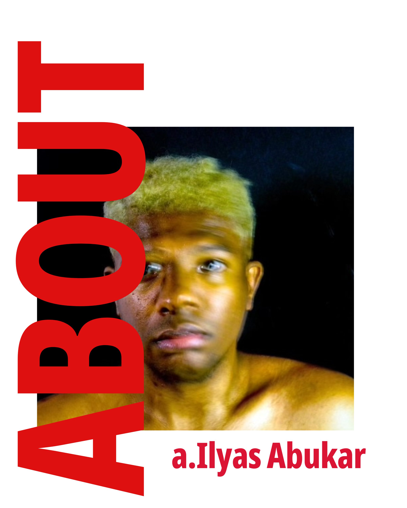

#ATTENTION
I am a scholar-artist of Black Studies, Science and Technology Studies, and Critical Trauma Studies. I question the underlying power dynamics that shape notions of civility, hospitality, diversity, benevolence, and equality.